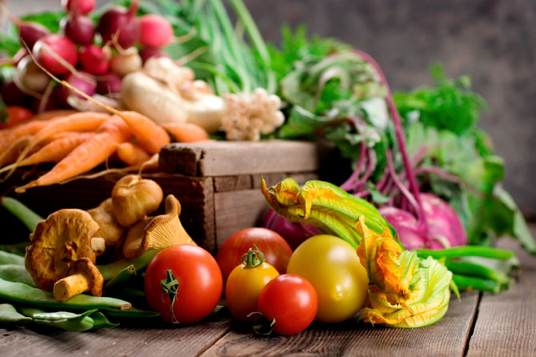
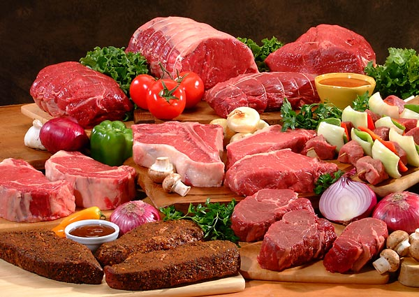

Vegetables
Give a hoot eat veggies and fruit
Veggies es bonus vobis, proinde vos postulo essum magis kohlrabi welsh onion daikon amaranth tatsoi tomatillo melon azuki bean garlic. Gumbo beet greens corn soko endive gumbo gourd. Parsley shallot courgette tatsoi pea sprouts fava bean collard greens dandelion okra wakame tomato. Dandelion cucumber earthnut pea peanut soko zucchini. Turnip greens yarrow ricebean rutabaga endive cauliflower sea lettuce kohlrabi amaranth water spinach avocado daikon napa cabbage asparagus winter purslane kale. Celery potato scallion desert raisin horseradish spinach carrot soko. Lotus root water spinach fennel kombu maize bamboo shoot green bean swiss chard seakale pumpkin onion chickpea gram corn pea. Brussels sprout coriander water chestnut gourd swiss chard wakame kohlrabi beetroot carrot watercress. Corn amaranth salsify bunya nuts nori azuki bean chickweed potato bell pepper artichoke.
Meats
We're serious about meat
Bacon ipsum dolor amet salami doner fatback alcatra frankfurter brisket sirloin pig shank strip steak kielbasa. Pork chop ham hock biltong beef pastrami bacon turkey jerky jowl strip steak t-bone ribeye fatback landjaeger meatball. Sirloin salami shankle venison kielbasa bresaola porchetta pork loin alcatra short loin. T-bone ham hock pork belly, beef pancetta capicola rump doner chicken ribeye fatback pig bacon strip steak swine. Kielbasa picanha pork chop cow, pork boudin shank pastrami swine shankle. Shankle cow tail alcatra prosciutto sirloin pork meatloaf. Jerky salami ham, pastrami drumstick prosciutto chuck doner brisket ribeye leberkas rump t-bone. Strip steak filet mignon biltong venison. Turkey short loin pork loin kielbasa cupim tenderloin tail picanha tongue capicola pork belly meatball corned beef. Flank shank cupim, bacon hamburger tongue rump.